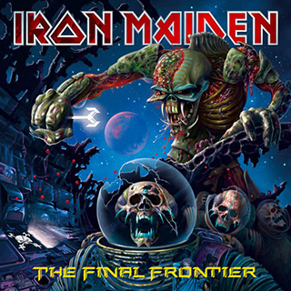
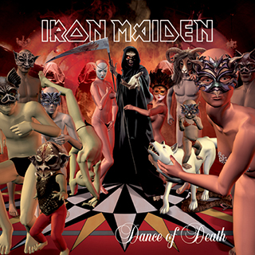
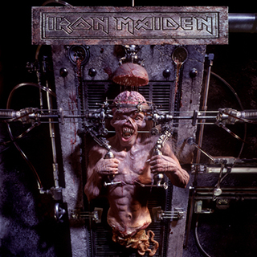
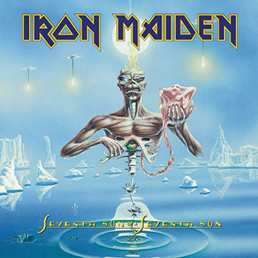
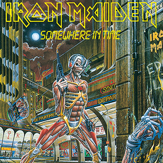
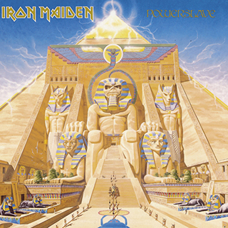
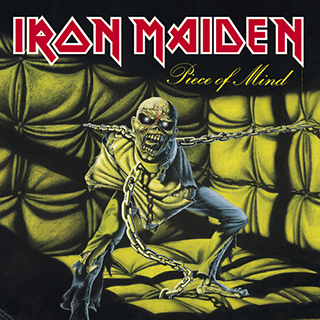

This page was created as an HTML / CSS exercise while attending Tech Elevator Coding Bootcamp.

About
"Iron Maiden are an institution. Over the course of 46 years they have come to embody a spirit
of
fearless creative independence, ferocious dedication to their fans, and a cheerful
indifference
to their critics that’s won them a following that spans every culture, generation, and
time-zone. A story of gritty determination and courageous defiance of the naysayers, theirs
has
been an adventure like no other."

Discography
Studio Albums
| Album Cover | Album Name | Release Date |
|---|---|---|
 |
Senjutsu | 9/3/2021 |
 |
The Book of Souls | 9/4/2015 |
|  | The Final Frontier | 8/16/2010 |
 |
A Matter of Life and Death | 8/28/2006 |
|  | Dance of Death | 9/8/2003 |
 |
Brave New World | 5/29/2000 |

|
Virtual XI | 3/23/1998 |
|  | The X Factor | 10/2/1995 |
 |
Fear of the Dark | 5/11/1992 |
 |
No Prayer for the Dying | 1/10/1990 |
|  | Seventh Son of a Seventh Son | 4/11/1988 |
|  | Somewhere in Time | 9/29/1986 |
|  | Powerslave | 9/3/1984 |
|  | Piece of Mind | 5/16/1983 |
 |
The Number of the Beast | 3/22/1982 |
 |
Killers | 2/2/1981 |
 |
Iron Maiden | 4/14/1980 |
Quotes & Lyrics
We tread a fine line between taking ourselves seriously and being Spinal Tap.
-Bruce Dickinson (Tobler, John (1992). NME Rock 'N' Roll Years (1st ed.). London: Reed International Books Ltd. p. 366. CN 558)
*
Fans want to see people who can play; they respect certain values like professionalism, and they don't want to be treated like shit. They pay good money and they look forward to seeing some good music being played by decent musicians, who really put their soul into it.
-Bruce Dickinson (Tobler, John (1992). NME Rock 'N' Roll Years (1st ed.). London: Reed International Books Ltd. p. 366. CN 558)
*
So understand... Don't waste your time always searching for those wasted years. Face up, make your stand! Realize you're living in the golden years.
-Iron Maiden. "Wasted Years" Somewhere in Time. 1986.
*
When you know that your time is close at hand... Maybe then you'll begin to understand... Life down here is just a strange illusion.
-Iron Maiden. "Hallowed Be Thy Name" The Number of the Beast. 1982.
Tour Photos
Maiden England North American Tour - June 26th 2012 - Boston, MA


*
Legacy of the Beast World Tour - September 15th 2022 - Tulsa, OK